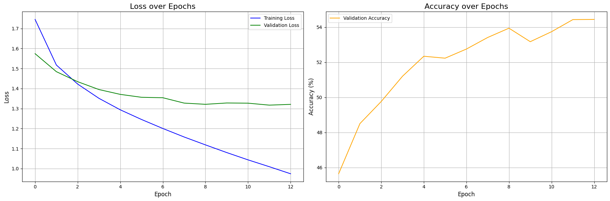
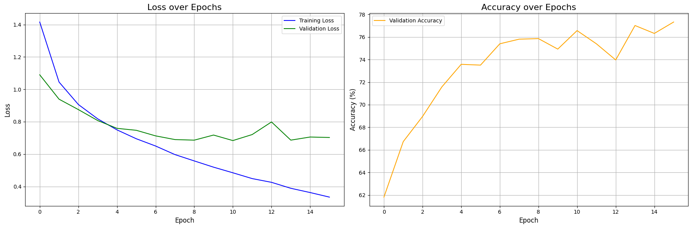

图像分类相关模型复现手记
📖 阅读信息
阅读时间约 5 分钟 | 约 1046 字 | 包含 991 行代码
这是模型复现手记的第一篇，主要挑几个经典的图像分类模型进行复现。相关模型的架构和理论在网上都有诸多的讨论了，本文就不赘述。
而本文正是基于笔者对模型架构的认知，针对复现时遇到的许多现象提出自己的理解。因此必然会有值得商榷之处。也欢迎大家在评论区讨论。
复现使用的代码框架
本文的一系列复现基于下面的代码，代码运行在 Kaggle 的 Jupyter Notebook 上面。所以我根据 Notebook 的每一个 Cell 来给出代码。
这个代码框架的大致介绍是：通过模型暴露的一个接口函数 get_model_on_device() 获取模型实例，然后使用 hyperopt 框架，在 CIFAR-10 数据集上分割 20% 数据用以对模型进行全局学习率和训练轮次的早停法调参；获取最优参数后，在全量数据上进行训练，最后收集训练信息得到结果和部分数据变化的可视化图像。
由于每一次都要花大量时间寻找合适的学习率，笔者花了一天时间研究了一下 muP（Paper link here） 的原理以及怎样迁移学习率，结论：在已有数据上（MLP, CNN, ResNet-18）进行的实验和相关理论计算证明，模型架构（残差连接，BN等）会影响损失地形（Paper link here），导致跨架构的学习率迁移失效。其实很明显，比如微调ResNet就比从零训练ResNet的best LR更低，因为预训练权重已经在一个最小值附近了，损失地形比起随机点位更平坦。所以该花时间调参还得花时间调参。不过，可以考虑在小宽度模型上再 scale up，这样就符合 muP 的初心了。具体的实验过程，还请大家参阅后文。
下面是每一个 Cell 的代码：
Cell 1: 引入必要的库以及设置设备
| import torch
import torch.nn as nn
import torchvision
import torchvision.transforms as transforms
from torch.utils.data import DataLoader, random_split, Subset
import matplotlib.pyplot as plt
import numpy as np
import time
# 导入 hyperopt 用于超参数调优
from hyperopt import fmin, tpe, hp, Trials, STATUS_OK
# 导入 tqdm，在 jupyter 中使用 notebook 版本
from tqdm.notebook import tqdm
# torch.manual_seed(3407) is all you need!
# 为了实验复现性使用的手动种子。
torch.manual_seed(3407)
# 设置设备
device = torch.device('cuda' if torch.cuda.is_available() else 'cpu')
print(f"using device: {device}")
|
Cell 2: 调优和训练使用的参数
| # --- Hyperopt 调优参数 ---
TUNE_DATA_PERCENT = 0.2 # 使用 20% 的数据进行快速调优
TUNE_MAX_EPOCHS = 50 # 调优时，每个试验最多训练的 epoch 数
PATIENCE = 5 # 早停法：验证损失连续 5 个 epoch 没有改善就停止
MAX_EVALS = 20 # 调优总共尝试的次数
LR_SEARCH_RANGE = (-10, -4) # 学习率对数搜索范围，也就是 exp(-4)~exp(-10) 大概 2e-2 到4e-5 之间
# --- 最终训练参数，这里只是声明，具体值由调优过程决定 ---
BEST_LEARNING_RATE = None
BEST_EPOCHS = None
BATCH_SIZE = 128
|
Cell 3: 绘图和评估相关函数
| def evaluate_model(model, data_loader, criterion, device):
"""评估模型，返回平均损失和准确率"""
model.eval()
total_loss = 0.0
correct = 0
total = 0
with torch.no_grad():
for images, labels in data_loader:
images, labels = images.to(device), labels.to(device)
outputs = model(images)
loss = criterion(outputs, labels)
total_loss += loss.item() * images.size(0)
_, predicted = torch.max(outputs.data, 1)
total += labels.size(0)
correct += (predicted == labels).sum().item()
avg_loss = total_loss / total
accuracy = 100 * correct / total
return avg_loss, accuracy
def count_parameters(model):
"""计算模型的可训练参数数量"""
return sum(p.numel() for p in model.parameters() if p.requires_grad)
def plot_and_save_history(history, filename="training_curves.png"):
"""绘制并保存训练过程中的损失和准确率曲线"""
fig, (ax1, ax2) = plt.subplots(1, 2, figsize=(18, 6))
# 绘制损失曲线 (训练 vs 验证/测试)
ax1.plot(history['train_loss'], label='Training Loss', color='blue')
if 'val_loss' in history:
ax1.plot(history['val_loss'], label='Validation Loss', color='green')
ax1.set_title('Loss over Epochs', fontsize=16)
ax1.set_xlabel('Epoch', fontsize=12)
ax1.set_ylabel('Loss', fontsize=12)
ax1.grid(True)
ax1.legend()
# 绘制准确率曲线
if 'val_accuracy' in history:
ax2.plot(history['val_accuracy'], label='Validation Accuracy', color='orange')
ax2.set_title('Accuracy over Epochs', fontsize=16)
ax2.set_xlabel('Epoch', fontsize=12)
ax2.set_ylabel('Accuracy (%)', fontsize=12)
ax2.grid(True)
ax2.legend()
plt.tight_layout()
plt.savefig(filename, bbox_inches='tight')
print(f"Traing curve saved at {filename}")
plt.show()
|
Cell 4: 定义模型
| """
这里使用 MLP 作为示例。为了保证框架和模型解耦，统一只暴露一个 get_model_on_device 的无参数函数用以返回新的模型实例。
"""
# 模型结构参数
INPUT_SIZE = 32 * 32 * 3
HIDDEN_SIZE_1 = 512
HIDDEN_SIZE_2 = 256
class MLP(nn.Module):
def __init__(self, input_size, hidden_size_1, hidden_size_2, num_classes):
super(MLP, self).__init__()
self.network = nn.Sequential(
nn.Flatten(), # 将 3x32x32 的图像展平成一维向量
nn.Linear(input_size, hidden_size_1),
nn.ReLU(),
nn.Linear(hidden_size_1, hidden_size_2),
nn.ReLU(),
nn.Linear(hidden_size_2, num_classes)
)
def forward(self, x):
return self.network(x)
# 对外接口，方便后续实验改模型结构
def get_model_on_device():
return MLP(INPUT_SIZE, HIDDEN_SIZE_1, HIDDEN_SIZE_2, NUM_CLASSES).to(device)
|
Cell 5: 加载并划分数据集
| # 数据集参数
NUM_CLASSES = 10
# 定义数据预处理
transform = transforms.Compose([
transforms.ToTensor(),
transforms.Normalize(
(0.4914, 0.4822, 0.4465),
(0.2023, 0.1994, 0.2010)
)
])
# 加载完整的 CIFAR-10 训练集
full_train_dataset = torchvision.datasets.CIFAR10(
root='./data',
train=True,
transform=transform,
download=True
)
# --- 为调优创建小规模数据集 ---
num_total_train = len(full_train_dataset)
tune_subset_size = int(num_total_train * TUNE_DATA_PERCENT)
# 随机抽取 20% 的数据索引
indices = torch.randperm(num_total_train).tolist()
tune_indices = indices[:tune_subset_size]
# 创建一个只包含这 20% 数据的数据集子集
tune_dataset = Subset(full_train_dataset, tune_indices)
# 将这个子集再划分为训练集和验证集 (80% train, 20% val)
num_tune = len(tune_dataset)
val_size_tune = int(num_tune * 0.2)
train_size_tune = num_tune - val_size_tune
train_subset_tune, val_subset_tune = random_split(tune_dataset, [train_size_tune, val_size_tune])
# 创建用于调优的数据加载器
train_loader_tune = DataLoader(dataset=train_subset_tune, batch_size=BATCH_SIZE, shuffle=True)
val_loader_tune = DataLoader(dataset=val_subset_tune, batch_size=BATCH_SIZE, shuffle=False)
print(f"total samples being used for hyperopt: {len(tune_dataset)}")
print(f"Train set size: {len(train_subset_tune)}")
print(f"Validation set size: {len(val_subset_tune)}")
|
Cell 6: 使用 hyperopt 对模型进行超参数搜索
| def objective(params):
"""Hyperopt 优化的目标函数"""
lr = params['lr']
model = get_model_on_device()
criterion = nn.CrossEntropyLoss()
optimizer = torch.optim.Adam(model.parameters(), lr=lr)
best_val_loss = float('inf')
epochs_no_improve = 0
best_epoch = 0
# 使用 tqdm 可视化每个 trial 的 epoch 进度
epoch_iterator = tqdm(range(TUNE_MAX_EPOCHS), desc=f"LR {lr:.6f}", leave=False)
for epoch in epoch_iterator:
model.train()
for images, labels in train_loader_tune:
images, labels = images.to(device), labels.to(device)
optimizer.zero_grad()
outputs = model(images)
loss = criterion(outputs, labels)
loss.backward()
optimizer.step()
val_loss, val_accuracy = evaluate_model(model, val_loader_tune, criterion, device)
# 更新进度条显示当前验证损失
epoch_iterator.set_postfix({'val_loss': f'{val_loss:.4f}'})
if val_loss < best_val_loss:
best_val_loss = val_loss
epochs_no_improve = 0
best_epoch = epoch + 1
else:
epochs_no_improve += 1
if epochs_no_improve == PATIENCE:
print(f"Early stopping triggered at epoch {epoch + 1}")
break
return {'loss': best_val_loss, 'status': STATUS_OK, 'best_epoch': best_epoch}
# 定义学习率的搜索空间
space = {'lr': hp.loguniform('lr', *LR_SEARCH_RANGE)}
print("--- Start finding best hyper parameters ---")
trials = Trials()
best_params = fmin(
fn=objective,
space=space,
algo=tpe.suggest,
max_evals=MAX_EVALS,
trials=trials,
)
# 从 trials 对象中找到最佳试验的结果
best_trial = trials.best_trial
BEST_LEARNING_RATE = best_params['lr']
BEST_EPOCHS = best_trial['result']['best_epoch']
print("\n--- Best hyper parameters found ---")
print(f"Best LR: {BEST_LEARNING_RATE:.6f}")
print(f"Best epochs: {BEST_EPOCHS}")
|
Cell 7: 在完整训练集上进行训练并监控性能
| print("\n--- Start training on full training set ---")
# 使用完整的训练数据集 (50000张图片)
full_train_loader = DataLoader(dataset=full_train_dataset, batch_size=BATCH_SIZE, shuffle=True)
# 测试集加载器
test_dataset = torchvision.datasets.CIFAR10(root='./data', train=False, transform=transform)
test_loader = DataLoader(dataset=test_dataset, batch_size=BATCH_SIZE, shuffle=False)
# 重新实例化模型和优化器
final_model = get_model_on_device()
criterion = nn.CrossEntropyLoss()
optimizer = torch.optim.Adam(final_model.parameters(), lr=BEST_LEARNING_RATE)
history = {'train_loss': [], 'val_loss': [], 'val_accuracy': []}
start_time = time.time()
for epoch in range(BEST_EPOCHS):
# --- 训练 ---
final_model.train()
running_loss = 0.0
train_iterator = tqdm(full_train_loader, desc=f"Epoch {epoch+1}/{BEST_EPOCHS}", leave=False)
for images, labels in train_iterator:
images, labels = images.to(device), labels.to(device)
optimizer.zero_grad()
outputs = final_model(images)
loss = criterion(outputs, labels)
loss.backward()
optimizer.step()
running_loss += loss.item() * images.size(0)
epoch_train_loss = running_loss / len(full_train_loader.dataset)
history['train_loss'].append(epoch_train_loss)
# --- 在测试集上评估以监控性能 ---
epoch_val_loss, epoch_val_accuracy = evaluate_model(final_model, test_loader, criterion, device)
history['val_loss'].append(epoch_val_loss)
history['val_accuracy'].append(epoch_val_accuracy)
print(f"Epoch [{epoch+1}/{BEST_EPOCHS}], Train Loss: {epoch_train_loss:.4f}, Test Loss: {epoch_val_loss:.4f}, Test Accuracy: {epoch_val_accuracy:.2f}%")
end_time = time.time()
training_duration = end_time - start_time
print("--- Over ---")
|
Cell 8: 生成实验的结果报告
| # 计算最终模型在测试集上的性能
final_test_loss, final_test_accuracy = evaluate_model(final_model, test_loader, criterion, device)
# 计算模型参数量
total_params = count_parameters(final_model)
# 格式化训练时长
mins, secs = divmod(training_duration, 60)
formatted_duration = f"{int(mins)}m {int(secs)}s"
# 绘制并保存性能曲线
report_history = {
'train_loss': history['train_loss'],
'val_loss': history['val_loss'],
'val_accuracy': history['val_accuracy']
}
plot_and_save_history(report_history)
# 打印报告
print("\n" + "="*50)
print(" " * 15 + "Results")
print("="*50)
print("\n[Hyper parameters]")
print(f" - Best LR: {BEST_LEARNING_RATE:.6f}")
print(f" - Best epochs: {BEST_EPOCHS} epochs")
print(f" - Batch size: {BATCH_SIZE}")
print("\n[Model structure]")
print(f" - Model type: MLP")
print(f" - Model structure:")
print(final_model)
print(f" - Total params: {total_params:,}")
print("\n[Training infomation]")
print(f" - Training duration on full training set: {formatted_duration}")
platform = "Kaggle's free P100, Thank you Google!" if torch.cuda.is_available() else "some poor guy's broken Intel core"
print(f" - Training device: {device} on {platform}")
print("\n[Benchmarks on test set]")
print(f" - Test loss: {final_test_loss:.4f}")
print(f" - Test accuracy: {final_test_accuracy:.2f}%")
print("\n" + "="*50)
|
在 CIFAR-10 上训练多层感知机
MLP 模型的训练结果展示

| ==================================================
Results
==================================================
[Hyper parameters]
- Best LR: 0.000056
- Best epochs: 13 epochs
- Batch size: 128
[Model structure]
- Model type: MLP
- Model structure:
MLP(
(network): Sequential(
(0): Flatten(start_dim=1, end_dim=-1)
(1): Linear(in_features=3072, out_features=512, bias=True)
(2): ReLU()
(3): Linear(in_features=512, out_features=256, bias=True)
(4): ReLU()
(5): Linear(in_features=256, out_features=10, bias=True)
)
)
- Total params: 1,707,274
[Training infomation]
- Training duration on full training set: 2m 51s
- Training device: cuda on Kaggle's free P100, Thank you Google!
[Benchmarks on test set]
- Test loss: 1.3208
- Test accuracy: 54.44%
==================================================
|
对 MLP 模型的解读和评述
模型结构图：
%%{init: {'theme': 'dark', 'themeVariables': { 'darkMode': true, 'primaryColor': '#1e1e2e', 'edgeLabelBackground':'#313244', 'tertiaryColor': '#181825'}}}%%
graph LR
%% Graph direction and styling
classDef box fill:#313244,stroke:#cdd6f4,stroke-width:2px,color:#cdd6f4,radius:8px;
classDef input fill:#585b70,stroke:#89b4fa,stroke-width:2px,color:#cdd6f4;
classDef output fill:#313244,stroke:#f38ba8,stroke-width:2px,color:#cdd6f4;
classDef result fill:#45475a,stroke:#a6e3a1,stroke-width:2px,color:#cdd6f4;
%% Input Layer
subgraph Input["Input Layer"]
A[("RGB Image<br>3x32x32")]
end
class Input input;
%% Flatten Layer
subgraph Flatten["Flatten Layer"]
B[("Flatten")]
end
A --> |3 @ 32x32| B
class Flatten box;
%% Hidden Layer 1
subgraph Hidden1["Hidden Layer 1"]
C["Linear<br>3072x512"]
D["ReLU"]
end
B -->|3072| C --> D
class Hidden1 box;
%% Hidden Layer 2
subgraph Hidden2["Hidden Layer 2"]
E["Linear<br>512x256"]
F["ReLU"]
end
D -->|512| E --> F
class Hidden2 box;
%% Output Layer
subgraph Output["Output Layer"]
G["Linear<br>256x10"]
end
F -->|256| G
class Output output;
%% Classification Result
subgraph Result["Classification Result"]
H[("10 output logits")]
end
G -->|10| H
class Result result;
%% Styling
style A stroke-dasharray: 5 5
style H stroke:#a6e3a1,stroke-width:3px
MLP 是利用 \(\mathbb{R}^n\rightarrow\mathbb{R}^m\) 的多重线性映射实现数据的降维，但是单纯的线性映射嵌套仍是 \(\mathbb{R}^{d_{in}}\rightarrow\mathbb{R}^{d_{out}}\) 的线性映射，因此需要在层与层之间添加非线性的激活函数引入非线性。这样一个足够宽的两层全连接网络即可拟合任意函数。
在这个任务里面，我们使用一个三层的 MLP，并采用 ReLU 作为层间的激活函数，由于我们对 one-hot 向量进行分类，因此使用交叉熵损失，如果用 MSE 的话，求导之后会发现它是交叉熵的导数乘以权重，这就不适合梯度稳定更新。
输入上是将 3@32x32 的图像展平成 3072 维的向量。当然我觉得这很没道理，图像本身就有两个维度三个通道，这种“平面化”的信息，感觉就被一个 nn.Flatten 给丢弃了。虽然说理论上经过足够数据训练之后，一个 fc layer 足够有能力提取各个维度上的相关性（万能拟合定理），但是网络要足够宽，数据要足够多，正则化要足够充分，而如果不引入更多先验知识来捕捉图像信息的特征，训练效率和参数效率都是极其低下的。
这是一个三层的多层感知机，参数量 1.7M。第一次训练下来发现这点参数量反映下来就是即使是 P100 这种老 GPU 都根本没使劲，倒是 CPU 一直在满负荷发力，搬运数据。后来意识到，dataloader 里面可以写上 num_workers=6 以及 pin_memory=True 来提升访存效率，并且把 batch_size 调大（反正就 2 M不到的模型爆不了显存），训练效率高了很多啊。
经过 13 个 Epoch 的训练之后，模型在 CIFAR-10 只上取得了 54.44% 的准确率。增大模型的宽度和深度理论上可以改善，但是效率太低了。因此需要发掘图像信息的特性，在模型结构上面引入更多先验信息，寻找能够更高效提取信息的架构。
卷积神经网络
CNN 模型的训练结果展示
CNN 的代码实现
| class CNN(nn.Module):
def __init__(self,
input_channels=3,
num_classes=10,
channels=[32, 64, 128], # 每个卷积块的输出通道数
kernel_sizes=[3, 3, 3], # 每个卷积层的 kernel 大小
dropout_rate=0.5, # dropout 概率
use_batchnorm=True): # 是否使用批归一化
super(CNN, self).__init__()
# 存储配置参数
self.config = {
'input_channels': input_channels,
'num_classes': num_classes,
'channels': channels,
'kernel_sizes': kernel_sizes,
'dropout_rate': dropout_rate,
'use_batchnorm': use_batchnorm
}
# 确保卷积层数量与 kernel 大小数量一致
assert len(channels) == len(kernel_sizes), \
"通道数列表与kernel大小列表长度必须一致"
# 构建卷积层
self.features = nn.Sequential()
in_channels = input_channels
for i, (out_channels, kernel_size) in enumerate(zip(channels, kernel_sizes)):
# 卷积层
self.features.add_module(
f'conv{i+1}',
nn.Conv2d(in_channels, out_channels, kernel_size, padding=kernel_size//2)
)
# 批归一化层（可选）
if use_batchnorm:
self.features.add_module(
f'bn{i+1}',
nn.BatchNorm2d(out_channels)
)
# 激活函数
self.features.add_module(f'relu{i+1}', nn.ReLU(inplace=True))
# 池化层
self.features.add_module(f'pool{i+1}', nn.MaxPool2d(2, 2))
in_channels = out_channels
# 计算卷积层输出后的特征图尺寸
# CIFAR-10输入为32x32，经过n次池化后尺寸为32/(2^n)
self.feature_size = in_channels * (32 // (2 ** len(channels))) ** 2
# 构建全连接层
self.classifier = nn.Sequential(
nn.Linear(self.feature_size, 512),
nn.ReLU(inplace=True),
nn.Dropout(dropout_rate),
nn.Linear(512, num_classes)
)
def forward(self, x):
x = self.features(x)
x = x.view(x.size(0), -1) # 展平特征图
x = self.classifier(x)
return x
def get_model_on_device():
return CNN().to(device)
|

| ==================================================
Results
==================================================
[Hyper parameters]
- Best LR: 0.000199
- Best epochs: 16 epochs
- Batch size: 128
[Model structure]
- Model type: CNN
- Model structure:
CNN(
(features): Sequential(
(conv1): Conv2d(3, 32, kernel_size=(3, 3), stride=(1, 1), padding=(1, 1))
(bn1): BatchNorm2d(32, eps=1e-05, momentum=0.1, affine=True, track_running_stats=True)
(relu1): ReLU(inplace=True)
(pool1): MaxPool2d(kernel_size=2, stride=2, padding=0, dilation=1, ceil_mode=False)
(conv2): Conv2d(32, 64, kernel_size=(3, 3), stride=(1, 1), padding=(1, 1))
(bn2): BatchNorm2d(64, eps=1e-05, momentum=0.1, affine=True, track_running_stats=True)
(relu2): ReLU(inplace=True)
(pool2): MaxPool2d(kernel_size=2, stride=2, padding=0, dilation=1, ceil_mode=False)
(conv3): Conv2d(64, 128, kernel_size=(3, 3), stride=(1, 1), padding=(1, 1))
(bn3): BatchNorm2d(128, eps=1e-05, momentum=0.1, affine=True, track_running_stats=True)
(relu3): ReLU(inplace=True)
(pool3): MaxPool2d(kernel_size=2, stride=2, padding=0, dilation=1, ceil_mode=False)
)
(classifier): Sequential(
(0): Linear(in_features=2048, out_features=512, bias=True)
(1): ReLU(inplace=True)
(2): Dropout(p=0.5, inplace=False)
(3): Linear(in_features=512, out_features=10, bias=True)
)
)
- Total params: 1,147,914
[Training infomation]
- Training duration on full training set: 4m 7s
- Training device: cuda on Kaggle's free P100, Thank you Google!
[Benchmarks on test set]
- Test loss: 0.7026
- Test accuracy: 77.33%
==================================================
|
对 CNN 模型的解读和评述
结构图（请放大观看）：
%%{init: {'theme': 'dark', 'themeVariables': { 'darkMode': true, 'primaryColor': '#1e1e2e', 'edgeLabelBackground':'#313244', 'tertiaryColor': '#181825'}}}%%
graph LR
%% Styling definitions
classDef box fill:#313244,stroke:#cdd6f4,stroke-width:2px,color:#cdd6f4,radius:8px;
classDef input fill:#585b70,stroke:#89b4fa,stroke-width:2px,color:#cdd6f4;
classDef output fill:#313244,stroke:#f38ba8,stroke-width:2px,color:#cdd6f4;
classDef result fill:#45475a,stroke:#a6e3a1,stroke-width:2px,color:#cdd6f4;
classDef conv fill:#313244,stroke:#74c7ec,stroke-width:2px,color:#cdd6f4;
%% Input Layer
subgraph Input["Input"]
A[("3@32×32")]
end
class Input input;
%% Feature Extractor
%% -- Conv Block 1 --
subgraph Block1["Conv Block 1"]
B["Conv2d<br> 3x32 x 3×3 kernel"]
C["BatchNorm2d<br> 32 channels"]
D["ReLU"]
E["MaxPool2d<br> 2×2/2"]
end
A --> B
B -->|32 @ 32x32| C --> D --> E
class Block1 conv;
%% -- Conv Block 2 --
subgraph Block2["Conv Block 2"]
F["Conv2d<br> 32x64 x 3×3 kernel"]
G["BatchNorm2d<br> 64 channels"]
H["ReLU"]
I["MaxPool2d<br> 2×2/2"]
end
E --> |32 @ 16×16| F
F --> |64 @ 16×16| G --> H --> I
class Block2 conv;
%% -- Conv Block 3 --
subgraph Block3["Conv Block 3"]
J["Conv2d<br> 64x128 x 3×3 kernel"]
K["BatchNorm2d<br> 128 channels"]
L["ReLU"]
M["MaxPool2d<br> 2×2/2"]
end
I --> |64 @ 8×8| J
J --> |128 @ 8×8| K --> L --> M
class Block3 conv;
%% Feature Flattening
subgraph Flatten["Flatten"]
N[("2048")]
end
M --> |128 @ 4×4| N
class Flatten box;
%% Classifier
subgraph Classifier["Classifier"]
O["Linear<br> 2048x512"]
P["ReLU"]
Q["Dropout<br> p = 0.5"]
R["Linear<br> 512x10"]
end
N --> O
O --> P --> Q --> R
class Classifier box;
%% Output Layer
subgraph Output["Classification Result"]
S[("10 output logits")]
end
R --> S
class Output output;
%% Styling
style A stroke-dasharray: 5 5
style S stroke:#a6e3a1,stroke-width:3px
conv2d 就是卷积操作，本质上是从输入张量 (batch_size, in_channel, H, W) 到输出张量 (batch_size, out_channel, H, W) 的一个利用四维张量 (in_channel, out_channel, H', W') 的卷积核进行的卷积操作，具体是对于单张图像的各个通道进行填充后，将自定义的 in_channel@H'xW' 的矩阵在其上一一对应进行滑动覆盖，并对覆盖到的区域进行逐元素求积并求和，得到了单个新矩阵，如此共选取 out_channel 次自定义矩阵，就得到了输出张量 (batch_size, out_channel, H, W) 这是任意一本深度学习教材都会讲解的内容。
CNN 通过先验引入稀疏连接（也就是 conv2d ）不仅可以实现对更大规模网络的稀疏近似，满足图像的平移不变性，还具有很好的可解释性（卷积核对应一个小面积的感受野，解决之前提到 MLP 的展平操作的问题，并且不同的卷积核提取不同的特征）。因此相当适合图像处理。当然最后还是得依靠一个 MLP 作为分类头，不过这里的展平操作就合理多了，因为经过多次 conv2d 之后，模型提取到的都是空间上弱相关的深层次（抽象）特征了。在这些特征之间进行组合就非常合理且直观了。
这个网络虽然参数量不如先前的 MLP，但是宽度要宽一些（我理解的网络宽度即通道数，因为这决定了模型捕获的特征数量），根据 muP 的理论，学习率可以翻 4 倍（MLP隐藏层维度 512， CNN 最大通道数 128），结论大致符合预期。
在 CIFAR-10 上从零训练 ResNet-18 / 对预训练 ResNet-18 在 CIFAR-10 上进行微调
训练结果展示
代码
| from torchvision.models import resnet18
class ResNet18(nn.Module):
def __init__(self, pretrained=False, num_classes=10):
super(ResNet18, self).__init__()
# 加载预训练或随机初始化的ResNet-18
self.resnet = resnet18(pretrained=pretrained)
# 调整第一个卷积层以适应32x32输入
# 原始ResNet-18的第一个卷积层是7x7, stride=2, padding=3
# 对于32x32图像，我们改为3x3, stride=1, padding=1
self.resnet.conv1 = nn.Conv2d(
3, 64, kernel_size=3, stride=1, padding=1, bias=False
)
# 调整最大池化层，不需要下采样太多
self.resnet.maxpool = nn.Identity() # 移除最大池化层
# 调整最后一个全连接层以适应CIFAR-10的10个类别
in_features = self.resnet.fc.in_features
self.resnet.fc = nn.Linear(in_features, num_classes)
def forward(self, x):
return self.resnet(x)
def get_model_on_device():
model = ResNet18()# pretrained=True 使用预训练权重，反之不使用。
return model.to(device)
|
从零训练结果
| ==================================================
Results
==================================================
[Hyper parameters]
- Best LR: 0.002787
- Best epochs: 8 epochs
- Batch size: 128
[Model structure]
- Model type: ResNet18 from scrach
- Model structure:
ResNet18(
(resnet): ResNet(
(conv1): Conv2d(3, 64, kernel_size=(3, 3), stride=(1, 1), padding=(1, 1), bias=False)
(bn1): BatchNorm2d(64, eps=1e-05, momentum=0.1, affine=True, track_running_stats=True)
(relu): ReLU(inplace=True)
(maxpool): Identity()
(layer1): Sequential(
(0): BasicBlock(
(conv1): Conv2d(64, 64, kernel_size=(3, 3), stride=(1, 1), padding=(1, 1), bias=False)
(bn1): BatchNorm2d(64, eps=1e-05, momentum=0.1, affine=True, track_running_stats=True)
(relu): ReLU(inplace=True)
(conv2): Conv2d(64, 64, kernel_size=(3, 3), stride=(1, 1), padding=(1, 1), bias=False)
(bn2): BatchNorm2d(64, eps=1e-05, momentum=0.1, affine=True, track_running_stats=True)
)
(1): BasicBlock(
(conv1): Conv2d(64, 64, kernel_size=(3, 3), stride=(1, 1), padding=(1, 1), bias=False)
(bn1): BatchNorm2d(64, eps=1e-05, momentum=0.1, affine=True, track_running_stats=True)
(relu): ReLU(inplace=True)
(conv2): Conv2d(64, 64, kernel_size=(3, 3), stride=(1, 1), padding=(1, 1), bias=False)
(bn2): BatchNorm2d(64, eps=1e-05, momentum=0.1, affine=True, track_running_stats=True)
)
)
(layer2): Sequential(
(0): BasicBlock(
(conv1): Conv2d(64, 128, kernel_size=(3, 3), stride=(2, 2), padding=(1, 1), bias=False)
(bn1): BatchNorm2d(128, eps=1e-05, momentum=0.1, affine=True, track_running_stats=True)
(relu): ReLU(inplace=True)
(conv2): Conv2d(128, 128, kernel_size=(3, 3), stride=(1, 1), padding=(1, 1), bias=False)
(bn2): BatchNorm2d(128, eps=1e-05, momentum=0.1, affine=True, track_running_stats=True)
(downsample): Sequential(
(0): Conv2d(64, 128, kernel_size=(1, 1), stride=(2, 2), bias=False)
(1): BatchNorm2d(128, eps=1e-05, momentum=0.1, affine=True, track_running_stats=True)
)
)
(1): BasicBlock(
(conv1): Conv2d(128, 128, kernel_size=(3, 3), stride=(1, 1), padding=(1, 1), bias=False)
(bn1): BatchNorm2d(128, eps=1e-05, momentum=0.1, affine=True, track_running_stats=True)
(relu): ReLU(inplace=True)
(conv2): Conv2d(128, 128, kernel_size=(3, 3), stride=(1, 1), padding=(1, 1), bias=False)
(bn2): BatchNorm2d(128, eps=1e-05, momentum=0.1, affine=True, track_running_stats=True)
)
)
(layer3): Sequential(
(0): BasicBlock(
(conv1): Conv2d(128, 256, kernel_size=(3, 3), stride=(2, 2), padding=(1, 1), bias=False)
(bn1): BatchNorm2d(256, eps=1e-05, momentum=0.1, affine=True, track_running_stats=True)
(relu): ReLU(inplace=True)
(conv2): Conv2d(256, 256, kernel_size=(3, 3), stride=(1, 1), padding=(1, 1), bias=False)
(bn2): BatchNorm2d(256, eps=1e-05, momentum=0.1, affine=True, track_running_stats=True)
(downsample): Sequential(
(0): Conv2d(128, 256, kernel_size=(1, 1), stride=(2, 2), bias=False)
(1): BatchNorm2d(256, eps=1e-05, momentum=0.1, affine=True, track_running_stats=True)
)
)
(1): BasicBlock(
(conv1): Conv2d(256, 256, kernel_size=(3, 3), stride=(1, 1), padding=(1, 1), bias=False)
(bn1): BatchNorm2d(256, eps=1e-05, momentum=0.1, affine=True, track_running_stats=True)
(relu): ReLU(inplace=True)
(conv2): Conv2d(256, 256, kernel_size=(3, 3), stride=(1, 1), padding=(1, 1), bias=False)
(bn2): BatchNorm2d(256, eps=1e-05, momentum=0.1, affine=True, track_running_stats=True)
)
)
(layer4): Sequential(
(0): BasicBlock(
(conv1): Conv2d(256, 512, kernel_size=(3, 3), stride=(2, 2), padding=(1, 1), bias=False)
(bn1): BatchNorm2d(512, eps=1e-05, momentum=0.1, affine=True, track_running_stats=True)
(relu): ReLU(inplace=True)
(conv2): Conv2d(512, 512, kernel_size=(3, 3), stride=(1, 1), padding=(1, 1), bias=False)
(bn2): BatchNorm2d(512, eps=1e-05, momentum=0.1, affine=True, track_running_stats=True)
(downsample): Sequential(
(0): Conv2d(256, 512, kernel_size=(1, 1), stride=(2, 2), bias=False)
(1): BatchNorm2d(512, eps=1e-05, momentum=0.1, affine=True, track_running_stats=True)
)
)
(1): BasicBlock(
(conv1): Conv2d(512, 512, kernel_size=(3, 3), stride=(1, 1), padding=(1, 1), bias=False)
(bn1): BatchNorm2d(512, eps=1e-05, momentum=0.1, affine=True, track_running_stats=True)
(relu): ReLU(inplace=True)
(conv2): Conv2d(512, 512, kernel_size=(3, 3), stride=(1, 1), padding=(1, 1), bias=False)
(bn2): BatchNorm2d(512, eps=1e-05, momentum=0.1, affine=True, track_running_stats=True)
)
)
(avgpool): AdaptiveAvgPool2d(output_size=(1, 1))
(fc): Linear(in_features=512, out_features=10, bias=True)
)
)
- Total params: 11,173,962
[Training infomation]
- Training duration on full training set: 5m 8s
- Training device: cuda on Kaggle's free P100, Thank you Google!
[Benchmarks on test set]
- Test loss: 0.5767
- Test accuracy: 83.46%
==================================================
|
微调结果
| ==================================================
Results
==================================================
[Hyper parameters]
- Best LR: 0.000330
- Best epochs: 3 epochs
- Batch size: 128
[Model structure]
- Model type: Pretrained ResNet18
- Model structure:
ResNet18(
(resnet): ResNet(
(conv1): Conv2d(3, 64, kernel_size=(3, 3), stride=(1, 1), padding=(1, 1), bias=False)
(bn1): BatchNorm2d(64, eps=1e-05, momentum=0.1, affine=True, track_running_stats=True)
(relu): ReLU(inplace=True)
(maxpool): Identity()
(layer1): Sequential(
(0): BasicBlock(
(conv1): Conv2d(64, 64, kernel_size=(3, 3), stride=(1, 1), padding=(1, 1), bias=False)
(bn1): BatchNorm2d(64, eps=1e-05, momentum=0.1, affine=True, track_running_stats=True)
(relu): ReLU(inplace=True)
(conv2): Conv2d(64, 64, kernel_size=(3, 3), stride=(1, 1), padding=(1, 1), bias=False)
(bn2): BatchNorm2d(64, eps=1e-05, momentum=0.1, affine=True, track_running_stats=True)
)
(1): BasicBlock(
(conv1): Conv2d(64, 64, kernel_size=(3, 3), stride=(1, 1), padding=(1, 1), bias=False)
(bn1): BatchNorm2d(64, eps=1e-05, momentum=0.1, affine=True, track_running_stats=True)
(relu): ReLU(inplace=True)
(conv2): Conv2d(64, 64, kernel_size=(3, 3), stride=(1, 1), padding=(1, 1), bias=False)
(bn2): BatchNorm2d(64, eps=1e-05, momentum=0.1, affine=True, track_running_stats=True)
)
)
(layer2): Sequential(
(0): BasicBlock(
(conv1): Conv2d(64, 128, kernel_size=(3, 3), stride=(2, 2), padding=(1, 1), bias=False)
(bn1): BatchNorm2d(128, eps=1e-05, momentum=0.1, affine=True, track_running_stats=True)
(relu): ReLU(inplace=True)
(conv2): Conv2d(128, 128, kernel_size=(3, 3), stride=(1, 1), padding=(1, 1), bias=False)
(bn2): BatchNorm2d(128, eps=1e-05, momentum=0.1, affine=True, track_running_stats=True)
(downsample): Sequential(
(0): Conv2d(64, 128, kernel_size=(1, 1), stride=(2, 2), bias=False)
(1): BatchNorm2d(128, eps=1e-05, momentum=0.1, affine=True, track_running_stats=True)
)
)
(1): BasicBlock(
(conv1): Conv2d(128, 128, kernel_size=(3, 3), stride=(1, 1), padding=(1, 1), bias=False)
(bn1): BatchNorm2d(128, eps=1e-05, momentum=0.1, affine=True, track_running_stats=True)
(relu): ReLU(inplace=True)
(conv2): Conv2d(128, 128, kernel_size=(3, 3), stride=(1, 1), padding=(1, 1), bias=False)
(bn2): BatchNorm2d(128, eps=1e-05, momentum=0.1, affine=True, track_running_stats=True)
)
)
(layer3): Sequential(
(0): BasicBlock(
(conv1): Conv2d(128, 256, kernel_size=(3, 3), stride=(2, 2), padding=(1, 1), bias=False)
(bn1): BatchNorm2d(256, eps=1e-05, momentum=0.1, affine=True, track_running_stats=True)
(relu): ReLU(inplace=True)
(conv2): Conv2d(256, 256, kernel_size=(3, 3), stride=(1, 1), padding=(1, 1), bias=False)
(bn2): BatchNorm2d(256, eps=1e-05, momentum=0.1, affine=True, track_running_stats=True)
(downsample): Sequential(
(0): Conv2d(128, 256, kernel_size=(1, 1), stride=(2, 2), bias=False)
(1): BatchNorm2d(256, eps=1e-05, momentum=0.1, affine=True, track_running_stats=True)
)
)
(1): BasicBlock(
(conv1): Conv2d(256, 256, kernel_size=(3, 3), stride=(1, 1), padding=(1, 1), bias=False)
(bn1): BatchNorm2d(256, eps=1e-05, momentum=0.1, affine=True, track_running_stats=True)
(relu): ReLU(inplace=True)
(conv2): Conv2d(256, 256, kernel_size=(3, 3), stride=(1, 1), padding=(1, 1), bias=False)
(bn2): BatchNorm2d(256, eps=1e-05, momentum=0.1, affine=True, track_running_stats=True)
)
)
(layer4): Sequential(
(0): BasicBlock(
(conv1): Conv2d(256, 512, kernel_size=(3, 3), stride=(2, 2), padding=(1, 1), bias=False)
(bn1): BatchNorm2d(512, eps=1e-05, momentum=0.1, affine=True, track_running_stats=True)
(relu): ReLU(inplace=True)
(conv2): Conv2d(512, 512, kernel_size=(3, 3), stride=(1, 1), padding=(1, 1), bias=False)
(bn2): BatchNorm2d(512, eps=1e-05, momentum=0.1, affine=True, track_running_stats=True)
(downsample): Sequential(
(0): Conv2d(256, 512, kernel_size=(1, 1), stride=(2, 2), bias=False)
(1): BatchNorm2d(512, eps=1e-05, momentum=0.1, affine=True, track_running_stats=True)
)
)
(1): BasicBlock(
(conv1): Conv2d(512, 512, kernel_size=(3, 3), stride=(1, 1), padding=(1, 1), bias=False)
(bn1): BatchNorm2d(512, eps=1e-05, momentum=0.1, affine=True, track_running_stats=True)
(relu): ReLU(inplace=True)
(conv2): Conv2d(512, 512, kernel_size=(3, 3), stride=(1, 1), padding=(1, 1), bias=False)
(bn2): BatchNorm2d(512, eps=1e-05, momentum=0.1, affine=True, track_running_stats=True)
)
)
(avgpool): AdaptiveAvgPool2d(output_size=(1, 1))
(fc): Linear(in_features=512, out_features=10, bias=True)
)
)
- Total params: 11,173,962
[Training infomation]
- Training duration on full training set: 1m 55s
- Training device: cuda on Kaggle's free P100, Thank you Google!
[Benchmarks on test set]
- Test loss: 0.3450
- Test accuracy: 89.06%
==================================================
|
对 ResNet-18 模型的解读和评述
ResNet-18 的结构如下所示：
%%{init: {'theme': 'dark', 'themeVariables': { 'darkMode': true, 'primaryColor': '#1e1e2e', 'edgeLabelBackground':'#313244', 'tertiaryColor': '#181825'}}}%%
graph LR
%% Styling definitions
classDef box fill:#313244,stroke:#cdd6f4,stroke-width:2px,color:#cdd6f4,radius:8px;
classDef input fill:#585b70,stroke:#89b4fa,stroke-width:2px,color:#cdd6f4;
classDef output fill:#313244,stroke:#f38ba8,stroke-width:2px,color:#cdd6f4;
classDef result fill:#45475a,stroke:#a6e3a1,stroke-width:2px,color:#cdd6f4;
classDef conv fill:#313244,stroke:#74c7ec,stroke-width:2px,color:#cdd6f4;
%% Input Layer
subgraph Input["Input"]
A[("3 @ 32×32")]
end
class Input input;
%% Initial Convolution
subgraph InitConv["Initial Convolution"]
B["Conv2d <br> 3x64 x 3×3"]
C["BatchNorm2d <br> 64 channels"]
D["ReLU"]
end
A --> B
B --> C --> D
class InitConv conv;
%% Layer 1 (2× BasicBlock without downsample)
subgraph Layer1["Layer1 (2×BasicBlock)"]
F["BasicBlock 1"]
G["BasicBlock 1"]
end
D --> |64 @ 32×32| F
F --> |64 @ 32×32| G
class Layer1 box;
%% Layer 2 (2× BasicBlock with downsample in first block)
subgraph Layer2["Layer2 (2×BasicBlock)"]
H["BasicBlock 2"]
I["BasicBlock 1"]
end
G --> |64 @ 32×32| H
H --> |128 @ 16×16| I
class Layer2 box;
%% Layer 3 (2× BasicBlock with downsample in first block)
subgraph Layer3["Layer3 (2×BasicBlock)"]
J["BasicBlock 2"]
K["BasicBlock 1"]
end
I --> |128 @ 16×16| J
J --> |256 @ 8×8| K
class Layer3 box;
%% Layer 4 (2× BasicBlock with downsample in first block)
subgraph Layer4["Layer4 (2×BasicBlock)"]
L["BasicBlock 2"]
M["BasicBlock 1"]
end
K --> |256 @ 8×8| L
L --> |512 @ 4×4| M
class Layer4 box;
%% Global Pooling and FC
subgraph PoolFC["GAP & Classfiaction"]
N["AdaptiveAvgPool2d <br> 1×1"]
O["Flatten <br> 512-dim vec"]
P["Linear <br> 512x10"]
end
M --> |512 @ 4×4| N --> |512 @ 1×1| O --> |512| P
class PoolFC box;
%% Output Layer
subgraph Output["output"]
Q[("10")]
end
P --> Q
class Output output;
%% Styling
style A stroke-dasharray: 5 5
style Q stroke:#a6e3a1,stroke-width:3px
其中，Basic block 1 是不带降采样的残差连接：
%%{init: {'theme': 'dark', 'themeVariables': { 'darkMode': true, 'primaryColor': '#1e1e2e', 'edgeLabelBackground':'#313244', 'tertiaryColor': '#181825'}}}%%
graph LR
%% Styling definitions
classDef box fill:#313244,stroke:#cdd6f4,stroke-width:2px,color:#cdd6f4,radius:8px;
classDef residual fill:#313244,stroke:#f5c2e7,stroke-width:2px,color:#cdd6f4;
%% BasicBlock Structure (No Downsample)
subgraph BasicBlockNoDS["BasicBlock 1"]
A["Conv2d <br> 64x64 x 3×3"]
B["BatchNorm2d <br> 64 channels"]
C["ReLU"]
D["Conv2d <br> 64x64 x 3×3"]
E["BatchNorm2d <br> 64 channels"]
F(("+"))
G["ReLU"]
end
%% Input
Input[("64 @ H×W")] --> A
Input --> F
%% Connections
A --> B --> C --> D --> E --> F
F --> G
%% Output
G --> Output[("64 @ H×W")]
class BasicBlockNoDS residual;
Basic block 2 是带降采样的残差连接：
%%{init: {'theme': 'dark', 'themeVariables': { 'darkMode': true, 'primaryColor': '#1e1e2e', 'edgeLabelBackground':'#313244', 'tertiaryColor': '#181825'}}}%%
graph LR
%% Styling definitions
classDef box fill:#313244,stroke:#cdd6f4,stroke-width:2px,color:#cdd6f4,radius:8px;
classDef residual fill:#313244,stroke:#f5c2e7,stroke-width:2px,color:#cdd6f4;
classDef downsample fill:#313244,stroke:#74c7ec,stroke-width:2px,color:#cdd6f4;
%% BasicBlock Structure (With Downsample)
subgraph BasicBlockWithDS["BasicBlock 2"]
A["Conv2d <br> 64x128 x 3×3 /2"]
B["BatchNorm2d <br> 128 channels"]
C["ReLU"]
D["Conv2d: 128x128 x 3×3"]
E["BatchNorm2d <br> 128 channels"]
F(("+"))
G["ReLU"]
subgraph Downsample["Downsampling"]
H["Conv2d: 64x128 x 1×1 /2"]
I["BatchNorm2d <br> 128 channels"]
end
end
%% Input
Input[("64 @ H×W")] --> A
Input --> H
%% Connections
A --> B --> C --> D --> E --> F
H --> I --> F
F --> G
%% Output
G --> Output[("128 @ H/2×W/2")]
class BasicBlockWithDS residual;
class Downsample downsample;
ResNet-18 的结构（在长宽维度）正如一个漏斗一样，除了初始化层和 Layer 1 以外，其余的 Layer 都是 Basic block 2 -> Basic block 1 的结构，也就是归纳特征——提取特征的一个顺序。最后使用自适应性池化来应对不同的输入。因为 torch 提供的 ResNet-18 是基于 ImageNet 设计的，输入是 3@224x224，利用自适应性池化，就可以只用修改对输入的处理了。
除此之外，ResNet 使用了多种技术才使如此深层的网络成为可能。
一是使用 ReLU 激活。其他激活函数如 sigmoid，其导数在 \([-1,1]\) 之间，这就导致梯度向深层流动的时候不断被一个绝对值小于 \(1\) 的数乘起来，逐渐消失。ReLU 求导要么 \(0\) 要么 \(1\)，也就是梯度要么在负数输出处停止流动要么就直接原封不动传下去。
二是使用 BatchNorm2d。批归一化试图将数据拉回标准正态分布，这解耦了层与层之间的输入依赖，相当于每一层都只用将一批标准正态数据映射到标准正态数据，独立性大大增强，反映到损失地形上，就是对模型的微扰（也就是优化器带来的参数更新）带来的（可能的）巨大扰动（即崎岖的损失地形）给平坦化了。
当然上面的两点在一般的 CNN 中都有使用，像 GoogLeNet 这种基于 Inception 的网络也只有 22 层，但是基于 ResNet 的网络可以轻松达到成百上千层，关键在于——
三是残差连接。Kaiming 意识到以下对比：考虑一般的神经网络单层
\[
y=\phi (\mathrm{Layer}(x))
\]
其中 \(y\) 为输出，\(\phi\) 为激活函数，\(\mathrm{Layer}\) 为对输入 \(x\) 做的操作，比如矩阵乘法或者卷积等。
那么向前传递的梯度为
\[
\dfrac{\partial y}{\partial x}=\dfrac{\partial \mathrm{Layer}}{\partial x}\phi' (\mathrm{Layer}(x))
\]
也就是一个数乘以小于等于 \(1\) 的数。但是，如果我们考虑这样的单层：
\[
y=\phi (x+\mathrm{Layer}(x))
\]
那么向前传递的梯度为
\[
\dfrac{\partial y}{\partial x}=(1+\dfrac{\partial \mathrm{Layer}}{\partial x})\phi' (\mathrm{Layer}(x))
\]
嗯，这样传递到的梯度确实变多了，但是还是受制于激活函数的导数啊，感觉……用处不大？
呵呵，事情没有那么简单。要不回头看看网络结构里面ReLU的位置到底在哪里呢？
是在两个 conv2d 的中间！也就是说，事实上顺序应该是
\[
y=x+\phi (\mathrm{Layer}(x))
\]
那么向前传递的梯度为
\[
\dfrac{\partial y}{\partial x}=1+\dfrac{\partial \mathrm{Layer}}{\partial x}\phi' (\mathrm{Layer}(x))
\]
这样，不管自己梯度多少，深层的梯度就都能顺畅流动到浅层了。
当然 kaiming 在论文里面的观点是恒等变换不易学习所以转而学习残差，这样即使什么都没有学到，至少还能保留恒等映射的能力。不过我更喜欢从数学角度推导咯~
最后可以看到 ResNet-18 虽然宽度比 CNN 大一倍，但是居然可以承受比 CNN 大好几个数量级的学习率，原因就在于这几个方案使得损失地形极度平滑，参数更新量即使比较大，也不会有特别大的震荡。然后 muP 的理论在这里就完全失效了，毕竟 muP 研究的是同一模型不同尺度的参数调整规律。
后面我使用 torch 官方提供的在 ImageNet 上预训练的权重，使用更小的学习率就可以得到更加的效果，果然预训练就是最佳的参数初始化策略啊。
可以看到 ResNet 的测试准确率有上了一个台阶。Scaling law 持续发力中......不过提到 Scaling law，怎么能不请出我们的 Transformer 模型呢？
ViT
| from torch import Tensor
class PatchEmbedding(nn.Module):
"""将图像分割为补丁并进行嵌入"""
def __init__(self, img_size=32, patch_size=4, in_channels=3, embed_dim=128):
super().__init__()
self.img_size = img_size
self.patch_size = patch_size
# 计算补丁数量
self.num_patches = (img_size // patch_size) ** 2
# 使用卷积层实现补丁嵌入 (等价于每个补丁应用一个卷积核)
self.proj = nn.Conv2d(
in_channels,
embed_dim,
kernel_size=patch_size,
stride=patch_size
)
def forward(self, x: Tensor) -> Tensor:
# x形状: (batch_size, in_channels, img_size, img_size)
x = self.proj(x) # 输出形状: (batch_size, embed_dim, num_patches^(1/2), num_patches^(1/2))
x = x.flatten(2) # 输出形状: (batch_size, embed_dim, num_patches)
x = x.transpose(1, 2) # 输出形状: (batch_size, num_patches, embed_dim)
return x
class TransformerClassifier(nn.Module):
"""用于CIFAR-10分类的Transformer模型"""
def __init__(
self,
img_size=32,
patch_size=4,
in_channels=3,
num_classes=10,
embed_dim=128,
depth=4, # Transformer编码器层数
num_heads=4, # 注意力头数
mlp_ratio=2.0, # MLP隐藏层维度比例
dropout=0.1, # Dropout概率
):
super().__init__()
# 补丁嵌入
self.patch_embed = PatchEmbedding(
img_size=img_size,
patch_size=patch_size,
in_channels=in_channels,
embed_dim=embed_dim
)
num_patches = self.patch_embed.num_patches
# 类别令牌 (用于最终分类)
self.class_token = nn.Parameter(torch.zeros(1, 1, embed_dim))
# 位置嵌入 (可学习)
self.pos_embed = nn.Parameter(torch.zeros(1, num_patches + 1, embed_dim))
# Dropout层
self.pos_drop = nn.Dropout(p=dropout)
# Transformer编码器
encoder_layer = nn.TransformerEncoderLayer(
d_model=embed_dim,
nhead=num_heads,
dim_feedforward=int(embed_dim * mlp_ratio),
dropout=dropout,
batch_first=True, # 批处理维度在前
)
self.transformer_encoder = nn.TransformerEncoder(encoder_layer, num_layers=depth)
# 分类头
self.classifier = nn.Sequential(
nn.LayerNorm(embed_dim),
nn.Linear(embed_dim, num_classes)
)
def forward(self, x: Tensor) -> Tensor:
# x形状: (batch_size, 3, 32, 32)
batch_size = x.shape[0]
# 补丁嵌入
x = self.patch_embed(x) # 输出形状: (batch_size, num_patches, embed_dim)
# 扩展类别令牌到批次大小
class_tokens = self.class_token.expand(batch_size, -1, -1) # 形状: (batch_size, 1, embed_dim)
# 将类别令牌与补丁嵌入拼接
x = torch.cat((class_tokens, x), dim=1) # 形状: (batch_size, num_patches + 1, embed_dim)
# 添加位置嵌入并应用dropout
x = x + self.pos_embed
x = self.pos_drop(x)
# Transformer编码
x = self.transformer_encoder(x) # 形状: (batch_size, num_patches + 1, embed_dim)
# 使用类别令牌的输出进行分类
x = x[:, 0] # 取类别令牌对应的输出，形状: (batch_size, embed_dim)
x = self.classifier(x) # 形状: (batch_size, num_classes)
return x
def get_model_on_device():
model = TransformerClassifier(
img_size=32,
patch_size=4,
in_channels=3,
num_classes=10,
embed_dim=192,
depth=4,
num_heads=8,
mlp_ratio=2.0,
dropout=0.1
)
return model.to(device)
|
| ==================================================
Results
==================================================
[Hyper parameters]
- Best LR: 0.000456
- Best epochs: 11 epochs
- Batch size: 128
[Model structure]
- Model type: ViT
- Model structure:
TransformerClassifier(
(patch_embed): PatchEmbedding(
(proj): Conv2d(3, 192, kernel_size=(4, 4), stride=(4, 4))
)
(pos_drop): Dropout(p=0.1, inplace=False)
(transformer_encoder): TransformerEncoder(
(layers): ModuleList(
(0-3): 4 x TransformerEncoderLayer(
(self_attn): MultiheadAttention(
(out_proj): NonDynamicallyQuantizableLinear(in_features=192, out_features=192, bias=True)
)
(linear1): Linear(in_features=192, out_features=384, bias=True)
(dropout): Dropout(p=0.1, inplace=False)
(linear2): Linear(in_features=384, out_features=192, bias=True)
(norm1): LayerNorm((192,), eps=1e-05, elementwise_affine=True)
(norm2): LayerNorm((192,), eps=1e-05, elementwise_affine=True)
(dropout1): Dropout(p=0.1, inplace=False)
(dropout2): Dropout(p=0.1, inplace=False)
)
)
)
(classifier): Sequential(
(0): LayerNorm((192,), eps=1e-05, elementwise_affine=True)
(1): Linear(in_features=192, out_features=10, bias=True)
)
)
- Total params: 1,212,490
[Training infomation]
- Training duration on full training set: 4m 43s
- Training device: cuda on Kaggle's free P100, Thank you Google!
[Benchmarks on test set]
- Test loss: 0.8867
- Test accuracy: 69.90%
==================================================
|
Patch based LSTM
VAE
ACGAN